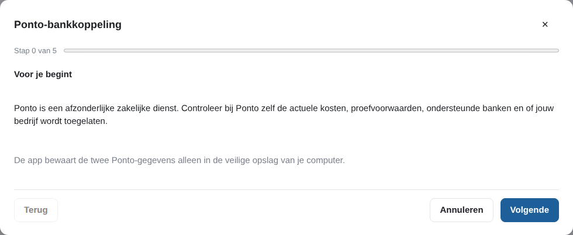
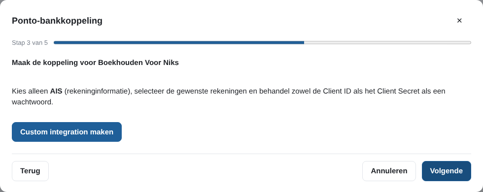
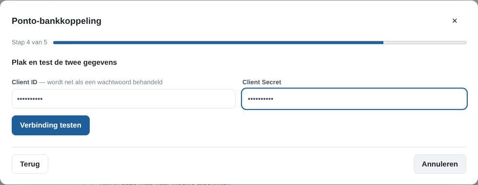
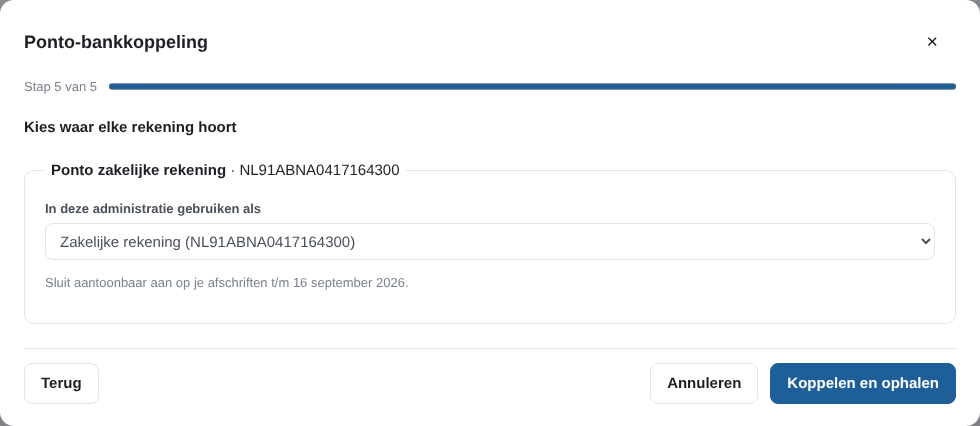
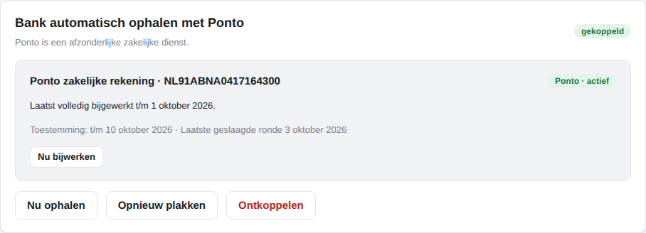

Nieuw in versie 1.2.0
Bank automatisch ophalen met Ponto
Geen afschrift meer downloaden en inlezen: de app haalt je betalingen zelf op en koppelt ze aan je facturen en bonnetjes. Je stelt het één keer in, in vijf stappen. Het is optioneel: afschriften inlezen blijft de basis en de terugval.
Wat het je oplevert
- Betalingen komen vanzelf binnen
De app haalt zelf betalingen op bij het starten en daarna ongeveer elke zes uur. Met Nu ophalen start je zelf een ronde. - Zelfde koppeling als altijd
Opgehaalde betalingen worden net als betalingen uit een afschrift gekoppeld aan je facturen en bonnetjes. Een betaling die al uit een afschrift is ingelezen, komt niet dubbel binnen. - Je ziet wat compleet is
Het scherm laat zien tot welke datum de betalingen volledig zijn bijgewerkt. Ontbreekt er een periode, dan vraagt de app die te onderbouwen met een afschrift of openingssaldo. Dat is niet hetzelfde als "compleet". - Rechtstreeks, zonder tussenstop bij ons
Gewoon ophalen gaat rechtstreeks tussen de app en Ponto. ShipDocs ziet je bankgegevens en je inloggegevens niet.
Ponto is een afzonderlijke dienst
Ponto is een zakelijke dienst waar je zelf een overeenkomst mee sluit, met je eigen koppeling en je eigen Client ID en Client Secret. Wat Ponto kost, welke banken het ondersteunt en of jouw bedrijf wordt toegelaten, bepaalt Ponto; controleer dat bij Ponto zelf. De koppeling in de app is gratis.
Instellen in vijf stappen
Op Bank staat de kaart Bank automatisch ophalen met Ponto. Kies Ponto instellen; de wizard loopt je door de stappen. De app telt de schermen van 0 tot 5, dus "Stap 0 van 5" is het eerste. De schermafbeeldingen zijn gemaakt met een nep-Ponto en een demo-administratie: de gegevens en het rekeningnummer zijn fictief.

- Voor je begint. De app zegt dat Ponto een afzonderlijke zakelijke dienst is en dat je kosten, voorwaarden, banken en toelating bij Ponto controleert. Heeft je computer geen veilige opslag voor inloggegevens, dan kan de koppeling hier niet worden ingesteld; blijf dan afschriften inlezen.
- Maak of open je Ponto-account. Met Open Ponto-dashboard ga je naar het Ponto-dashboard en rond je daar je zakelijke account af.
- Koppel je bank bij Ponto. Kies in Ponto de zakelijke bankrekening(en) die je in deze administratie wilt gebruiken en rond de toestemming bij je bank af.

- Maak de koppeling voor Boekhouden Voor Niks. Met Custom integration maken ga je naar Ponto. Kies alleen AIS (rekeninginformatie), selecteer de rekeningen en behandel Client ID en Client Secret als een wachtwoord.

- Plak en test de twee gegevens. Plak Client ID en Client Secret en kies Verbinding testen. Daarna kies je per Ponto-rekening waar die in deze administratie hoort: een bestaande rekening, een nieuwe zakelijke rekening, of niet gebruiken. De app stelt een bestaande rekening alleen voor bij een exact gelijk rekeningnummer. Een rekening die niet in euro's is of geen rekeningnummer heeft, is niet bruikbaar. Bij elke keuze staat of de aansluiting op je afschriften bewezen is. Koppelen en ophalen slaat de koppeling op en haalt meteen de eerste betalingen op.

Sluit je het venster met ingetypte maar niet opgeslagen gegevens, dan vraagt de app of je ze wilt wissen.
Daarna

- Nu ophalen en Nu bijwerken
Nu ophalen start zelf een ronde. Nu bijwerken (per rekening) vraagt Ponto om de bank te laten verversen. Voor die ene actie vraagt de app je publieke IP-adres op bij Cloudflare en stuurt het aan Ponto, omdat Ponto dat vereist. De app laat dat eerst zien en bewaart of logt het IP-adres niet. Na een geslaagde start kan dit pas na 30 minuten opnieuw. - Toestemming bijhouden
Bij elke rekening staat tot wanneer je toestemming bij Ponto loopt. Binnen 14 dagen voor de datum en na het verlopen zet de app een taak op Vandaag. Verleng de toestemming bij Ponto, of lees voorlopig een afschrift in. - Als er iets niet meer werkt
Verdwijnt de rekening bij Ponto, of werken de gegevens niet meer, dan meldt de app dat op Vandaag en kun je met Opnieuw plakken de twee gegevens vervangen. - Ontkoppelen
Ontkoppelen verwijdert de koppeling en de opgeslagen inloggegevens van deze computer. Je bestaande betalingen en bankrekeningen blijven staan. Verwijder daarna zelf ook de koppeling in Ponto.
Waar blijven de gegevens
- Op je eigen computer
Client ID en Client Secret staan versleuteld in je administratie (en dus in je eigen back-ups). Ze gaan niet mee in een pakket voor je boekhouder of een kopie voor een kantoor. - Alleen in je eigen administratie
In de koppeling werkt de app niet in een kantoorkopie, een demo-administratie of een administratie die alleen bekeken wordt.
Meer over wat de app wel en niet verstuurt staat in de privacyverklaring. Het volledige stappenplan staat ook in de documentatie op GitHub.
Veelgestelde vragen
Wat kost de Ponto-koppeling?
De koppeling zit in het gratis programma. Ponto is wel een afzonderlijke zakelijke dienst waar je zelf een overeenkomst mee sluit. Wat dat kost, welke banken het ondersteunt en of jouw bedrijf wordt toegelaten, bepaalt Ponto; controleer dat bij Ponto zelf.
Ziet ShipDocs mijn bankgegevens?
Nee. Gewoon ophalen gaat rechtstreeks tussen de app op je computer en Ponto. Alleen als je op Nu bijwerken klikt, vraagt de app eerst je publieke IP-adres op bij Cloudflare en stuurt het aan Ponto, omdat Ponto dat vereist. De app laat dat eerst zien en bewaart of logt het niet.
Moet ik nog afschriften inlezen?
Dat hoeft niet, maar het kan altijd. Afschriften inlezen blijft de basis en de terugval. Een betaling die al uit een afschrift is ingelezen, komt niet dubbel binnen.
Hoe weet ik dat de betalingen compleet zijn?
De app zegt tot welke datum de betalingen volledig zijn bijgewerkt. Ontbreekt er een periode, of sluit de app niet aantoonbaar aan op je afschriften, dan zegt het scherm dat en vraagt het die periode te onderbouwen met een afschrift of openingssaldo.
Wat als mijn toestemming bij Ponto afloopt?
Bij elke rekening staat tot wanneer je toestemming bij Ponto loopt. Binnen 14 dagen voor die datum, en na het verlopen, zet de app een taak op Vandaag. Verleng de toestemming bij Ponto, of lees voorlopig een afschrift in.
Gaat de koppeling mee naar mijn boekhouder?
Nee. Client ID en Client Secret staan versleuteld in je administratie en worden niet in een pakket voor je boekhouder of een kopie voor een kantoor meegegeven.
Meer lezen: wat is er nieuw in 1.2.0 · btw-aangifte zelf doen · zonder abonnement en offline · voor starters · voor boekhouders. Deze pagina geeft uitleg over het programma; Ponto en je bank bepalen zelf hun voorwaarden.